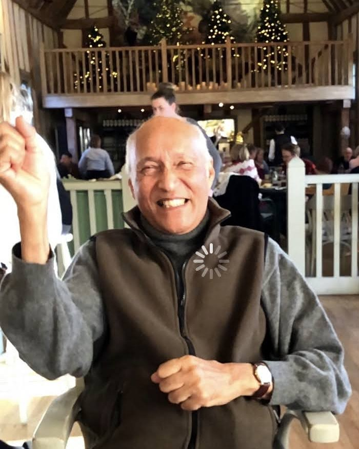

His life, in his own voice · recording started September 2026
Born 4 February 1943 — 83 years old
Twelve questions, waiting for him to answer them. Nothing here is written by anyone but him — as each answer is recorded it appears on this page, in his own words.
The highlights
Once there are a few recordings, the strongest go here — big, with a line of his own words pulled out underneath. Empty for now, and it should look empty.
First recording goes here
Record any one of the twelve questions below and it appears here within the hour. One answer is enough to send the link to the family.
The questions
Roughly in order, easiest first and the hardest one last. Tap any of them to see the follow-up prompts to ask him — those are what turn a thirty-second answer into a five-minute one.
Anyone in the family can add a question and it appears on this page with their name on it. It's the quickest way to get him talking about something nobody has thought to ask.
Optional
When an answer needs something to look at, it can be attached to that question rather than dumped in an album:
Each one sits under the answer it belongs to, captioned in his words.
It takes forty minutes and a phone propped on a stack of books. Most people wish they had started ten years earlier.
Question
Recording this one